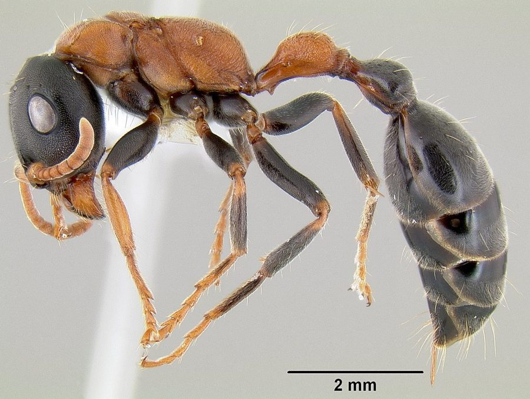

अर्बोरियल बाइकलर्ड चींटीArboreal Bicoloured Ant
Tetraponera rufonigra · Formicidae · INS-0175

- Scientific name वैज्ञानिक नाम
- Tetraponera rufonigra (Fabricius, 1793)
- Family कुल
- Formicidae
- Hindi हिंदी
- अर्बोरियल बाइकलर्ड चींटी
- Local names स्थानीय नाम
- arboreal bicoloured ant, ant
- Status here यहाँ की स्थिति
- native
- Movement आवागमन
- Resident, here all year
- Known from कहाँ दर्ज
- Others have published records from the wider Awadh–Purvanchal plain, none yet from Basti–Ayodhya अवध–पूर्वांचल से दूसरों के प्रकाशित अभिलेख, बस्ती–अयोध्या से अभी नहीं
- IUCN IUCN
- not evaluated
- Review समीक्षा
- audited and independently read
When to look कब देखें
Present all year. साल भर मौजूद।
Uses and possibilities उपयोग और संभावनाएँ
Drawn from the documented uses in the profile below, where each is labelled traditional, current or a research lead. All uses →
अर्बोरियल बाइकलर्ड चींटी / Arboreal Bicoloured Ant
Tetraponera rufonigra (Fabricius, 1793) — Formicidae
अर्बोरियल बाइकलर्ड चींटी — पेड़ों पर रहने वाली लाल और काली चींटी। छाल की दरारों में घोंसले बनाती है। छोटे कीटों को पकड़ती है और शहद जैसे रस (हनीड्यू) इकट्ठा करती है। नीम, आम, पीपल सब पेड़ों पर पाई जाती है। जहाँ हरियाली है, वहाँ मिल जाएगी।
Quick Identification त्वरित पहचान
| Feature | Description |
|---|---|
| Size | Worker 4–5 mm; queen 6–7 mm |
| Colour | Bicoloured: red-brown or rust head and thorax; black abdomen |
| Body shape | Robust, not as sleek as Paratrechina |
| Habitat | On tree trunks and branches; readily climbs vegetation |
| Trails | Forms organized foraging trails on tree bark |
| Nests | In wood cavities, bark crevices |
Field tip: Look on the bark of trees, especially neem, ber, mango, and peepal. The ants are larger than most tree-foraging ants and clearly bicoloured. Trails of ants moving up and down the trunk are visible. Gently knock the branch; the ants will scurry for cover. Does not sting but may bite defensively.
हिंदी — कैसे पहचानें: पेड़ की छाल पर लाल-काली चींटी। पेड़ के पास देखो, लाइन बनाकर जा रही होगी। नीम और आम के पेड़ पर आम।
Morphology आकारिकी
Biometrics:
| Measurement | Range |
|---|---|
| Worker body length | 4.0–5.0 mm |
| Queen body length | 6–7 mm |
| Head width | 1.0–1.2 mm |
Worker: Monomorphic. Head and thorax are red-brown, reddish, or rust-coloured. The abdomen is black or very dark brown, giving the distinctive bicoloured appearance. Eyes are large and dark. Antennae are 12-segmented, moderate in length. Legs are relatively robust. Mandibles are strong. No ocelli. The body is somewhat flattened, adapted for moving through crevices in bark.
Queen: Larger, with wings when first produced (alate). Colour pattern similar to workers. Wingless queens (dealate) may also be found in mature colonies.
Male: Winged, dark, smaller than queens.
Behaviour & Ecology व्यवहार और पारिस्थितिकी
A native, arboreal ant species common on trees and woody plants throughout tropical Asia. Workers are strictly arboreal, nesting in cavities within tree trunks and branches and rarely descending to the ground. The ants form organized foraging trails on tree bark, following pheromone trails laid down by scout workers. Colonies are relatively small compared to invasive species, with a single queen per colony.
The species is predatory, hunting small insects on tree foliage and bark. It also tends plant-feeding insects (mealybugs, scales, coccids) to harvest their honeydew, a source of carbohydrates. The relationship between the ants and plant-feeding insects can intensify herbivory, but the predatory activity of the ants also provides protection against other pests.
Nesting sites are carefully chosen cavities that provide shelter from weather and predators. A single tree can support multiple colonies. The species does not invade buildings and is generally not a pest. Instead, it is an important component of arboreal ecosystems.
हिंदी: पेड़ पर रहती है, ज़मीन पर कम। छोटे कीड़े खाती है। भुनगों को पालती है, उनका शहद चूसती है।
Life Cycle / Phenology जीवन चक्र
| Stage | Duration |
|---|---|
| Egg | 5–7 days |
| Larva | 18–22 days |
| Pupa | 8–12 days |
| Worker lifespan | 2–4 months |
| Queen lifespan | 2–4 years |
| Egg-to-worker | 31–41 days under warm conditions |
Temperature dependence: Development is fast at 25–28°C. At cooler temperatures, development slows. No dormancy in tropical regions; continuous colony growth occurs.
Reproduction: Single queen colonies. Queens are replaced if the current queen dies; the colony may then adopt a new queen or workers' ovaries may become active (rare).
Host Plants or Prey आहार
Food sources:
- Small insects: flies, small wasps, mites, small caterpillars
- Honeydew: collected from plant-feeding insects (mealybugs, scales, coccids)
- Plant nectar: occasionally collected from flowers
- Carrion: occasionally, if found on trees
Feeding: Workers hunt actively on foliage and bark. They tend plant-feeding insects, "milking" them for honeydew. Honeydew is the primary carbohydrate source; prey insects are the primary protein source, fed to larvae and the queen.
Predators / Natural Enemies शत्रु
- Arboreal predators: Spiders, antlions, and other small predatory arthropods
- Parasitoid flies: Phorid flies and other parasitoids may attack workers
- Ant-eating birds: Some birds specialize in foraging on tree bark for ants
- Larger ant species: May raid and displace this species
Agricultural / Human Relevance कृषि प्रासंगिकता
Not a pest. This species is generally not considered a pest. It does not invade buildings or create mounds. In gardens and orchards, the species is beneficial because it preys on small insects and can reduce pest populations. However, the tending of plant-feeding insects (mealybugs, scales) means that in some situations, the presence of this ant can indirectly increase damage to crops by protecting herbivorous pests from other predators. The net effect is usually positive, as the ant's predatory activity tends to balance pest populations.
Economic importance: In some regions, the species is considered beneficial for natural pest control in agroforestry and shade-grown crops. The ants do not sting but may bite if the colony is disturbed; they are not a hazard to people.
हिंदी: खेत में ये चींटी अच्छी है। छोटे कीड़ों को खाती है। भुनगों को पालने से कभी-कभी नुकसान हो सकता है, लेकिन सब में फायदा ज़्यादा है।
Expected Locally स्थानीय रूप से अपेक्षित
Not a field record. Written from published accounts for eastern Uttar Pradesh. No confirmed local sighting yet — if you have seen it, that is what the atlas needs.
अभी तक स्थानीय पुष्टि नहीं। यह विवरण प्रकाशित स्रोतों से है, किसी अवलोकन से नहीं।
Expected on trees throughout Basti district and eastern UP, particularly on neem, mango, ber, and peepal. The presence of organised ant trails on tree bark and bicoloured workers indicates the species. A specimen collected from a tree with date and location would confirm a local record.
Distribution वितरण
Global range: Native to tropical Asia, from India to Southeast Asia and northern Australia.
In India: Widespread in forested and semi-forested areas; common in gardens and cultivated areas throughout India.
In Uttar Pradesh: Present in all districts with suitable tree cover; particularly common in the eastern plains.
In Basti district / eastern UP: Expected on trees in gardens, agricultural areas, and forested patches; common on native and introduced tree species.
Research Questions शोध प्रश्न
- Does the presence of this ant species on a tree correlate with higher or lower damage from herbivorous insects on that tree? / इस चींटी वाले पेड़ पर कीटों का नुकसान कम है या ज़्यादा? — Compare herbivore damage on trees with and without the ant; quantify.
- What tree species are most commonly colonised by this ant, and why? — Survey multiple tree species; record ant presence and nesting preferences.
- How large are individual colonies, and how many colonies occupy a single large tree? — Dig out a nesting site and count workers and queens.
- Can this ant species be used as a biological control agent against crop pests in agroforestry systems? — Test the ant's predatory efficiency against specific pest species in controlled conditions.
- What are the chemical constituents of the ants' pheromone trails, and how do they recruit nestmates to food sources? / इस चींटी की सूंघने की शक्ति कैसी है? — Behavioural trials; follow trail composition; chemical analysis.
Similar Species मिलती-जुलती प्रजातियाँ
| Species | How to tell apart | हिंदी |
|---|---|---|
| Other Tetraponera spp. | Monocoloured or different colour pattern; different habitats | अलग रंग |
| Crematogaster spp. | Similar size but different colour (usually entirely dark); different body proportions | पूरी तरह काली |
Field rule: Bicoloured ant (4–5 mm) with red-brown head and thorax and black abdomen, found in trails on tree bark: Arboreal Bicoloured Ant.
Taxonomy & Classification वर्गीकरण
Original description. Described by Fabricius in 1793 as Formica rufonigra based on specimens from India or the East Indies.
Subspecies. Monotypic; no subspecies are recognised, though geographic variation is noted.
Family and order placement. Order Hymenoptera, family Formicidae. Tetraponera is a genus of arboreal ants with about 10 recognised species, primarily African and Asian. T. rufonigra is the most widespread and common species in Asia.
Phylogenetic notes. The genus Tetraponera is thought to have originated in Africa, with T. rufonigra being a relatively recent dispersal to Asia.
IUCN status rationale. Not evaluated. A native species not under conservation consideration.
Photo Gallery फोटो गैलरी
Photos needed आवश्यक फोटो
- [ ] Worker on tree bark, showing bicoloured body (पेड़ पर चींटी)
- [ ] Foraging trail on tree trunk (लाइन बनाकर चलती हुई)
- [ ] Nest entrance in tree bark (घोंसले का द्वार)
No photos yet — add field photos to media/species/arboreal_bicoloured_ant/ and run node scripts/sync_photos.js.
References संदर्भ
- Fabricius, J.C. (1793). Entomologia Systematica, emendata et aucta. Vol. 2. Peder Iversen, Hafniae.
- Bolton, B. (1994). Identification guide to the ant genera of the world. Harvard University Press, Cambridge, MA.
- Vásquez-Morales, S.G., Castaño-Meneses, G. & Badii, M.H. (2010). Ant communities in two shade-coffee systems and forest fragments. Neotropical Entomology 39(2): 216–222.
- Sharma, A. & Meena, P. (2012). Insects and mites associated with mango (Mangifera indica L.) and their management. Mango and its By-products 2: 159–195.
- Hölldobler, B. & Wilson, E.O. (1990). The Ants. Harvard University Press, Cambridge, MA.
- GBIF Occurrence Data — Tetraponera rufonigra, Asia (2024).
Source file: species/fauna/insects/arboreal_bicoloured_ant.md